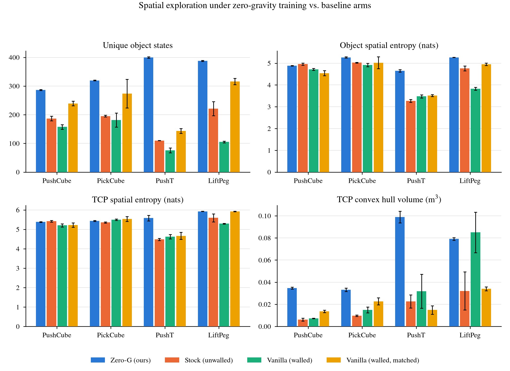
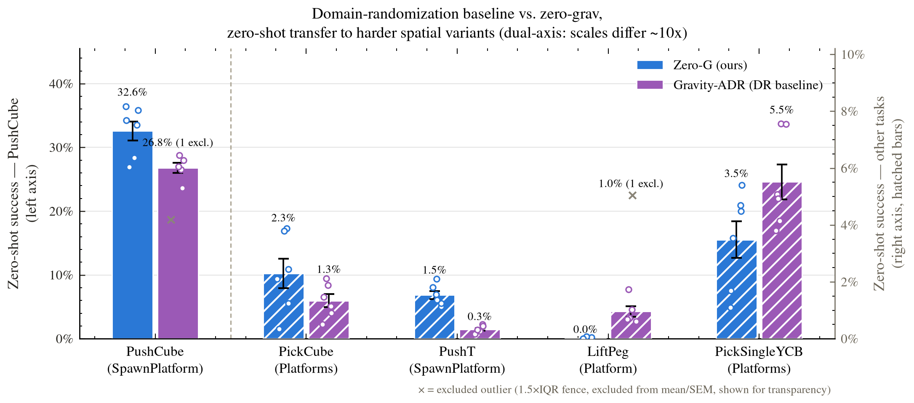
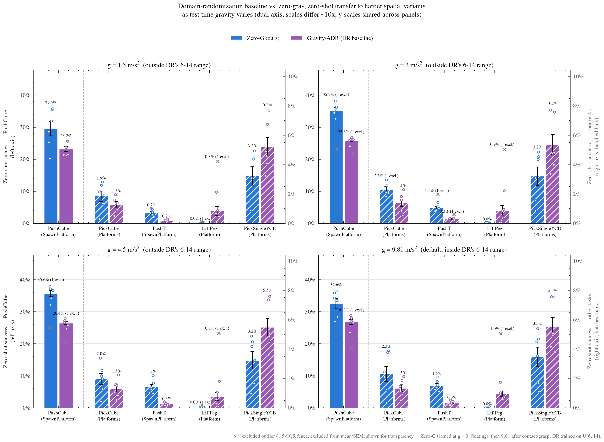

Contributions
Selective containment volumes
A new mechanism that makes learning in zero gravity possible: thin walls that block the floating object but not the robot arm (separate collision groups), and are invisible to cameras. Without them a floating object drifts out of reach and training gets no signal. Task-defining walls can be released on contact or grasp.
implemented · 8 tasks, 2 robotsGravity-on-contact and gravity-on-grasp
In pure zero gravity, policies exploit the floating object instead of learning the skill (reward hacking). We switch gravity on per environment at first contact or at grasp, so the object floats while the robot explores and the task is finished under normal gravity.
implementedZero gravity as a spatial-diversity enhancer, beyond domain randomization
We compare zero gravity with gravity domain randomization, both fixed range and adaptive (ADR, OpenAI 2019), and with regular gravity with and without walls: same tasks, same PPO recipe, 3 seeds per arm.
in progress · 120-run comparison runningAltered gravity as the primary training regime
To our knowledge, the first study of altered gravity as the main training regime for tabletop manipulation, rather than as a robustness perturbation, and of whether the resulting demonstrations improve imitation-learned policies and VLAs.
in progress · VLA distillation nextAbstract draft
Vision-language-action models (VLAs) learn from embodied observation-action pairs. Unlike language models, they cannot draw on decades of accumulated internet-scale data, so they rely heavily on simulation, where task diversity is a fundamental constraint. We study physics as an axis of exploration for synthetic embodied data collection, beyond domain randomization.
Existing simulated tabletop manipulation tasks mimic real-world gravity, which restricts the policy's experience to a near-2D slice of the 3D world: objects rest on the table and are approached from a narrow band of heights and directions. By disabling simulated gravity for the object, we lift this constraint. The same task then spans the full 3D volume, exposing the policy to object poses and contact configurations that tabletop episodes never visit. Two mechanisms make this trainable: selective containment volumes, thin walls that keep the floating object within reach without blocking the robot, and gravity that switches on at contact or grasp, which prevents the reward hacking we see in pure zero gravity and leaves the task itself unchanged.
We train reinforcement-learning (PPO) experts this way on 8 ManiSkill3 tasks, compare them with regular gravity and with fixed and adaptive gravity randomization, and distill their success-filtered demonstrations into imitation policies and VLAs. Preliminary results on a stock Franka Panda show that zero-gravity experts cover more of the workspace than regular-gravity experts, with mixed but encouraging zero-shot transfer to harder spatial variants. By distilling an expert trained on [X] zero-gravity episodes and evaluating on a set of tabletop manipulation tasks, we observe an average of [X] improvement in task performance compared to policies distilled from regular-gravity experts distillation results pending.
Method
Zero-gravity training
Each task is a ManiSkill3 tabletop task (Franka arm). We place the object at a random point in a walled 3D volume above the table instead of on the table surface. The walls are thin and collision-only: they keep the object, but not the arm, inside the workspace, and cameras do not see them. Gravity is cancelled per environment by writing an opposing force directly into the GPU physics buffers every step. Three modes are used:
- off: the object floats for the whole episode;
- on-contact: gravity switches on the first time the gripper touches the object;
- on-grasp: gravity switches on once the object is grasped.
Once switched on, gravity stays on for the rest of the episode, so the end of every episode is the ordinary regular-gravity task. Because the object can be anywhere, the PPO expert must learn to approach and manipulate it from many heights and directions. Its success-filtered rollouts become the demonstration dataset.
Competing sources of diversity
Zero gravity is one way to make the data more diverse. The question that matters is whether it beats other ways at the same cost. All arms share the task, the walled 3D spawn volume (except "no walls") and the PPO recipe:
| Training arm | Gravity during training | 3D spawn | Walls |
|---|---|---|---|
| Zero-G (ours) | 0 until contact / grasp, then 9.81 m/s² | ✓ | ✓ |
| Regular gravity, walled | 9.81 m/s² | ✓ | ✓ |
| Regular gravity, no walls | 9.81 m/s² | ✓ | – |
| Gravity-DR (fixed range) | |g| ~ U[6, 14] m/s² per episode, straight down | ✓ | ✓ |
| Gravity-ADR (adaptive) | |g| = 9.81 ± r, with r widened by automatic domain randomisation (OpenAI 2019, magnitude-only) | ✓ | ✓ |
Environments
Eight ManiSkill3 tasks (StackCube and PokeCube planned), each shown under four of the training arms. Pick a task to see what happens to the object when the robot does nothing: in Zero-G the object keeps floating (and may drift and bounce off the invisible walls); under regular gravity it falls to the table.
Preliminary results preliminary
Q1 · Expert behaviour
Do zero-gravity experts explore more of the workspace?

Q2 · Expert-level spatial transfer
Do zero-gravity experts transfer zero-shot to harder spatial layouts?

Same comparison as test-time gravity varies (1.5, 3, 4.5 and 9.81 m/s²)

Q3 · Distillation (headline experiment)
Do zero-gravity demonstrations give policies and VLAs better spatial generalisation?
Datasets released
Two matched, state-only demonstration datasets from a DROID-style robot setup (Franka arm, Robotiq gripper, impedance control). Each covers 8 tasks with about 1,000 success-filtered, trimmed episodes per task, in LeRobot format, under CC-BY-4.0. In both datasets the experts follow the same recipe on the same spawn distribution; the intended difference is gravity.
Zero-gravity trajectories (state, v1)
PushCube, LiftPeg, PickCube, PickSingleYCB, PullCube, PlaceSphere, RollBall, PushT.
stray-light/zerograv-manipulation-trajectories-state-v1
Regular-gravity control (state, v1)
Same 8 tasks, gravity always on ("vanilla-matched" envs).
stray-light/zerograv-manipulation-regular-gravity-trajectories-state-v1
Sample demonstrations: PushT, zero gravity vs regular gravity
In progress
- running5-arm, 8-task comparison on the stock Panda. 8 tasks × 5 arms (Zero-G, regular gravity walled and without walls, Gravity-DR fixed, Gravity-ADR adaptive) × 3 seeds = 120 PPO training runs on current physics. This batch replaces the preliminary results above.
- nextSpatial-transfer targets for all tasks. Raised platforms and elevated spawns already exist for 5 tasks. PullCube, PlaceSphere and RollBall are next, then StackCube and PokeCube (10 tasks in total).
- plannedDROID-style robot. The same comparison on a Franka + Robotiq setup that mirrors our lab's hardware (the released datasets already use it).
- plannedDistillation into a VLA. Fine-tune π0.5 on rendered image demonstrations from each arm, at an equal frame budget, and evaluate in distribution and on the spatial targets. The pipeline exists, but the image datasets still need to be rendered.
- plannedHardware. A small zero-shot sim-to-real evaluation on the DROID-style rig.
- doneReleased datasets (above), per-environment gravity control on the GPU simulator, and walled 3D-spawn versions of 8 tasks.
BibTeX
@misc{zerograv2026,
title = {Learning in Zero Gravity: Spatially Diverse Demonstrations
for Robot Manipulation Policies},
author = {Amin, Asif and Gong, Litian and Li, Jiachen},
year = {2026},
note = {Work in progress. Placeholder entry; no paper yet.}
}
Contact
Questions or interest in collaborating: contact@example.com